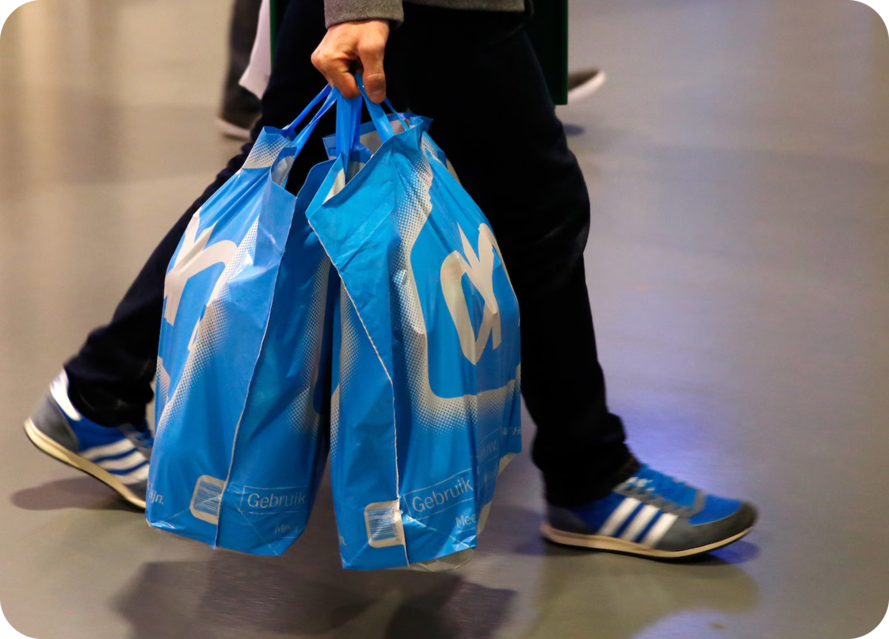
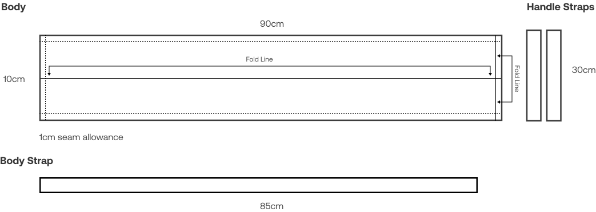

Albert
Sheath
Summary
With the plastic waste crisis in mind, I developed new methods for processing plastic shopping bags into durable materials for accessories, such as a fencing sheath.
Skills
Soft Product Development, Material Research
Tools
Sewing Machine
Heat Press
Duration
7 weeks, Spring 2025
Advisor
Holly Krueger, Instructor at Tu/e
Why I made this
While on exchange in the Netherlands, I picked up a new fencing sword and a habit of collecting Albert Heijn plastic bags. Getting the blade safely across the city for fencing practice (by bike) was a challenge, and a growing stash of single-use plastic was another. This project solved both at once.
Research
Exploring material properties with small samples - what can I do with a heat press and sowing machine?
I used the most common type of Albert Heijn plastic bag.


Developing a durable material was a trial and error process
Changing variables: temperature of heat press and number of sheets.
Under-Heated

The plastic delaminates with too little heat
Over-Heated

Overheating causes holes and shrinkage
Just Right

With the correct application of heat, the sheets melt together and becomes stronger as a result.
Exploring trade-offs with two different joining methods
Heat Welded

When heat welded, the joint resists shear forces well but is prone to cracking under severe bending forces.
Machine Sewn

Standard electronic sewing machines can handle up to 10 layers of plastic bags without needle damage, while leather machines can sew through 24 layers safely. The connections are reliable if spaced appropriately. However, machine sowing makes it obvious that two separate pieces were used - an effect I decided to lean into, using black thread.
Planning the Design
Creating a pattern based on my sword dimensions
My plan was to use a melt together multiple large sheets of plastic, cut the the pattern, and take the leftover pieces to attach the body strap and make handle straps.

Pivoting
With my first attempt at melting large sheets together, the plastic shrunk and failed miserably :(
- Some sections of the plastic shrunk over two times its width, so the pieces became unusable.
- Some sections of the plastic shrunk over two times its width, so the pieces became unusable.
- The handles had the same shrinkage and the strap would be too unreliable to use long term.

Method Improvements
Developing accurate measurements and fabrication methods using the heat press
What I did differently:
- I created larger general sheets that would not shrink a second time.
- Retested the temperatures on the new hardware to get exact measurements for reference
- I upcycled a cheap nylon strap because it would be significantly more reliable.

Assembly
By taking the combined sheets, the whole unit was stiched together

The double-fold hem was chosen to enhance the durability of areas on the sheath that experience frequent contact.

This made sure there was a curved and durable surface where the sword contacts the body.

Where the body needed to be extended, the pieces were welded and overlap stitched together
Final Product


Final Reflection
Overall, the product was successful. Plastic bags can be reused and upcycled in this manner, and the process produces very little waste. In the future, I would have added more considerations for the sword itself and how it interacts with the plastics. Because the plastics are non-porous, moisture can build up inside the sheath, so I added silica packs to manage humidity. Additionally, more long-term testing should have been done on the structure of the plastic after repeated use. The tassels shown holding the sword in place in image 4 eventually broke and needed to be replaced with a more durable material.